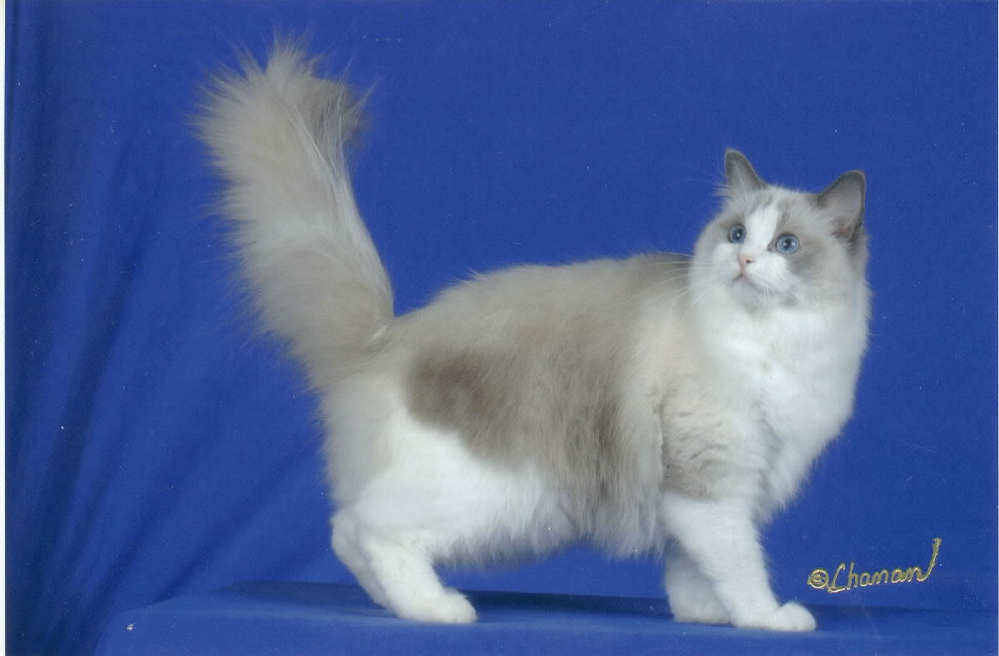
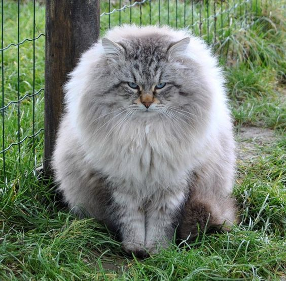

I am kind of REALLY excited to be graduating in the spring.
My road to being a Computer Science (math minor) Senior at UMASS Lowell is different from most of my classmates.
I transferred in from Middlesex Community college maximizing my credits via the Mass Transfer program.
That isn't too unusual though. I see alot of my Middlesex classmates around.
I am a good deal older than most of the undergraduates (and grad students) at UMASS Lowell. I started my academic career a long time ago as an English major at a liberal arts college in Vermont.
My interest in literature faded and I thought that I would never return to school. However, over time I developed an interest in logic and math, specifically as applied to computers.
I began taking classes part time while working at Comcast and when I couldn't get my schedule to work with the classes I needed for the Associate's degree I quit my job. This was in the beginning of February, 2014.
Since then I have only worked full time over the summers, first for Fleetmatics as a technical support rep and then
If a kitty has long soft fur that kitty is fluffy. There are a lot of different kinds of fluffy kitties. The Maine Coon cat is the most famous American long haired cat. It displays traits of parallel evolution with the Norwegian Forest cat. One time when I lived in Brockton I lived with two cats that were part Maine Coon.
The Siberian cat is a long haired cat from Eastern Europe. The Siberian cat is great for people with allergies because it does not produce cat dander.
The Ragdoll is a new cat; it is known for its size and friendliness.
In addition to the hypertext links given for each cat I have included a list of pictures which are manipulated by the CSS code.  